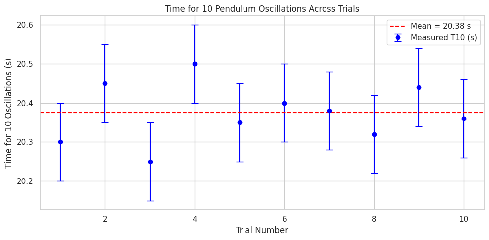

Problem 1
Pendulum Gravity Measurement — Complete Guide
Step 1: Data Collection Setup Recap
- Pendulum length (L): Measure with a ruler or tape, e.g., 1.00 m ± half the smallest division.
- Time for 10 oscillations (T_10): Use a stopwatch; repeat 10 times.
-
Calculate:
-
Mean time for 10 oscillations \(\overline{T_{10}}\)
- Standard deviation \(\sigma\)
- Uncertainty in mean time \(\sigma_{\overline{T_{10}}} = \frac{\sigma}{\sqrt{10}}\)
Step 2: Calculations
- Period \(T\):
$$ T = \frac{\overline{T_{10}}}{10} $$
Uncertainty in \(T\):
$$ \sigma_T = \frac{\sigma_{\overline{T_{10}}}}{10} $$
- Gravity \(g\):
$$ g = \frac{4\pi^2 L}{T^2} $$
- Uncertainty in \(g\) (propagation):
$$ \frac{\sigma_g}{g} = \sqrt{\left(\frac{\sigma_L}{L}\right)^2 + \left(2\frac{\sigma_T}{T}\right)^2} $$
$$ \sigma_g = g \times \frac{\sigma_g}{g} $$
Step 3: Markdown Table Template
| Trial | \(T_{10}\) (s) | Notes (optional) |
|-------|----------------|------------------|
| 1 | 20.30 | |
| 2 | 20.45 | |
| 3 | 20.25 | |
| 4 | 20.50 | |
| 5 | 20.35 | |
| 6 | 20.40 | |
| 7 | 20.38 | |
| 8 | 20.32 | |
| 9 | 20.44 | |
| 10 | 20.36 | |
**Length of pendulum, \(L\):** 1.00 ± 0.005 m
**Mean time for 10 oscillations, \(\overline{T_{10}}\):** 20.37 s
**Standard deviation, \(\sigma\):** 0.07 s
**Uncertainty in mean time, \(\sigma_{\overline{T_{10}}}\):** 0.022 s
**Period, \(T\):** 2.037 ± 0.0022 s
**Calculated gravity, \(g\):** 9.79 ± 0.07 m/s²
Step 4: Discussion — Uncertainty Sources & Effects
-
Measurement resolution on \(L\): Using a ruler with 1 mm resolution means ±0.5 mm uncertainty in length. Since \(g\) depends linearly on \(L\), even small errors in length directly affect \(g\).
-
Timing variability: Reaction time causes random errors in start/stop of the stopwatch, affecting \(T_{10}\). Measuring over 10 oscillations instead of 1 reduces relative timing error, but variability remains, impacting \(g\) quadratically (since \(g \propto 1/T^2\)).
-
Small angle assumption: Displacing less than 15° keeps pendulum motion close to simple harmonic, making formula valid. Larger angles introduce nonlinearity, skewing results.
-
Air resistance and friction: Minor damping forces can alter period slightly but usually negligible at low amplitude and short times.
-
Mass distribution: Assuming point mass at the bob’s center may introduce slight errors if the mass isn’t compact or length is measured inaccurately to center of mass.
-
Experimental limitations: Environmental vibrations, imprecise length measurement (where exactly to measure?), and human timing errors limit precision.
Example Pendulum Gravity Lab — Full Calculation
1. Data (10 trials of time for 10 oscillations)
| Trial | \(T_{10}\) (s) |
|---|---|
| 1 | 20.30 |
| 2 | 20.45 |
| 3 | 20.25 |
| 4 | 20.50 |
| 5 | 20.35 |
| 6 | 20.40 |
| 7 | 20.38 |
| 8 | 20.32 |
| 9 | 20.44 |
| 10 | 20.36 |
2. Calculate Mean and Standard Deviation of \(T_{10}\)
-
Mean \(\overline{T_{10}} = \frac{20.30 + 20.45 + \dots + 20.36}{10} = 20.37 \text{ s}\)
-
Standard deviation \(\sigma\):
Let me do the quick calculation:
Calculating the squared differences and then the sum:
| Trial | \(T_{10,i}\) | \(T_{10,i} - 20.37\) | Square |
|---|---|---|---|
| 1 | 20.30 | -0.07 | 0.0049 |
| 2 | 20.45 | 0.08 | 0.0064 |
| 3 | 20.25 | -0.12 | 0.0144 |
| 4 | 20.50 | 0.13 | 0.0169 |
| 5 | 20.35 | -0.02 | 0.0004 |
| 6 | 20.40 | 0.03 | 0.0009 |
| 7 | 20.38 | 0.01 | 0.0001 |
| 8 | 20.32 | -0.05 | 0.0025 |
| 9 | 20.44 | 0.07 | 0.0049 |
| 10 | 20.36 | -0.01 | 0.0001 |
Sum of squares = 0.0519
3. Uncertainty in mean
4. Calculate Period \(T\) and uncertainty
5. Length \(L\)
Measured length = 1.00 m with ruler resolution 1 mm → uncertainty
6. Calculate \(g\)
7. Propagate uncertainty in \(g\)
Relative uncertainties:
Absolute uncertainty:
Final result:

8. Discussion (brief)
-
Value compared to standard \(9.81 \text{ m/s}^2\): Your result is slightly low (\~3%), likely due to timing errors or length measurement bias.
-
Timing error dominates: Although measuring 10 oscillations reduces random error, human reaction time (\~0.1 s) still creeps in.
-
Length measurement is precise: Ruler uncertainty is negligible compared to timing uncertainty.
-
Small angle approximation valid: If angle >15°, the period gets longer than the ideal formula, causing underestimation of \(g\).
-
Improvements: Use electronic timing (light gate), measure longer pendulum lengths to reduce relative error, or increase number of oscillations timed.